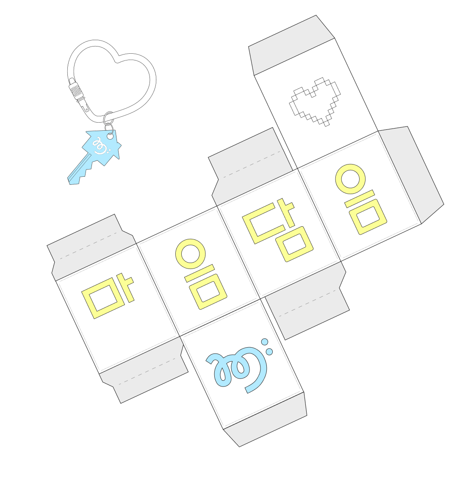
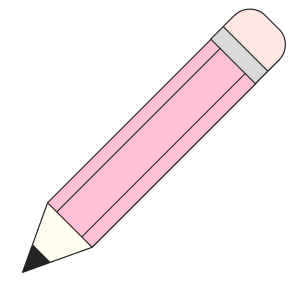

감정 조절력 강화
감정표현불능은 단기간에 해결하기 어려운 심리적 과제로,
복합적인 원인에 의해 발생하는 인지 왜곡 양상으로 인해 당사자 개인이 겪는
문제마다 각각 해당 원인에 맞는 다른 개입 방식이 요구됩니다.
따라서 실질적인 해결을 위해선 일회적인 해결법을 적용하는 것이 아닌
본인의 감정 조절력 자체를 강화하는 것이 필요합니다.
마음담음,
우리의 이야기
마음담음은 다정과 진실의 가치를 중시하여 가치있는 훈련을 만듭니다.
보다 의미있는 훈련을 만들기 위한 마음담음만의 철학을 소개합니다.

나를 이해하고
해방하는
주체적 성장의 경험
마음담음은 과학적 기법인 '자기주장훈련법'을 기반으로, 감정을 안전하게 표현하고
제대로 관리하는 법을 익힐 수 있는 미디어 콘텐츠 기반의 훈련을
새롭게 제안합니다.
억눌린 마음을 풀어내고, 잊었던 자기자신을 다시 찾을 수 있도록 돕는
감각적이고 체계적인 훈련 서비스를 제공하고 있습니다.
마음담음의 핵심가치,
자기주장훈련이란?
Assertiveness Training
자기주장훈련(AT, Assertiveness Training)은 감정표현을 위한
행동 중심의 접근법으로, “사람의 행동은 특정한 조건에서 변할 수 있으며,
이 행동 변화의 법칙을
사람 간의 문제 해결에 적용할 수 있다.”고
제시하여 개인의 자발적인 행동 변화를 강조하는 훈련입니다.

마음담음, 비전을 담다
자기주장훈련, 왜 필요할까요?
자기주장훈련, 어째서 좋을까요?
스스로 이루는 성장
자기주장훈련에서는 타인과의 깊이 있는 소통법, 삶에 적극적으로 대처하는 방식,
자기 자신을 극복하는 전략 등을 통해 스스로의 행동 변화를 유도합니다.
궁극적으로 자기자신에 대한 태도와 감정 자체의 변화를 불러올 수 있는 각종
훈련 방법을 주로 다룹니다. 그 과정에서 피훈련자가 자발·자율적으로 목표를
설정하고, 훈련 경험의 온전한 주체가 될 수 있도록 인도합니다.
자기 자신을 극복하는 전략 등을 통해 스스로의 행동 변화를 유도합니다.
궁극적으로 자기자신에 대한 태도와 감정 자체의 변화를 불러올 수 있는 각종
훈련 방법을 주로 다룹니다. 그 과정에서 피훈련자가 자발·자율적으로 목표를
설정하고, 훈련 경험의 온전한 주체가 될 수 있도록 인도합니다.
자기주장훈련, 마음담음은 이렇게 활용해요
단계적 접근 훈련 체계
과학적 기법인 자기주장훈련법을 기반으로 하여, 하급 난이도의 단기적 훈련부터
중·상급 난이도의 반복 훈련까지 단계별 구조적 완성도를 갖춘 훈련을 점진적으로
시도하도록 하는 훈련 프로그램을 제공합니다. 단기 훈련을 통해 훈련에 대한
흥미와 초기 자기효능감을 유도하며, 장기 반복 훈련으로의 접근을 보다 쉽게 만드는
단계적 접근을 통한 훈련 체계를 구성하였습니다.
중·상급 난이도의 반복 훈련까지 단계별 구조적 완성도를 갖춘 훈련을 점진적으로
시도하도록 하는 훈련 프로그램을 제공합니다. 단기 훈련을 통해 훈련에 대한
흥미와 초기 자기효능감을 유도하며, 장기 반복 훈련으로의 접근을 보다 쉽게 만드는
단계적 접근을 통한 훈련 체계를 구성하였습니다.
마음담음, 우리는 목표해요
긍정적 표현 경험 형성
감정표현을 하는 것만큼 중요한 것은 감정표현에 대한 경험을 가지는 것입니다.
감정표현은 개인이 과거에 겪었던 경험과 밀접하게 연결되며, 특히 결과가
부정적이었던 경험은 표현의 억제에 큰 영향을 미칩니다. 마음담음은 ‘감정표현에
대한 긍정적 경험 형성’을 통해 이후 직접 표현까지 이어질 수 있는 토대를 마련하고,
스스로 체득하고, 경험을 기반으로 성장하게 합니다.
감정표현은 개인이 과거에 겪었던 경험과 밀접하게 연결되며, 특히 결과가
부정적이었던 경험은 표현의 억제에 큰 영향을 미칩니다. 마음담음은 ‘감정표현에
대한 긍정적 경험 형성’을 통해 이후 직접 표현까지 이어질 수 있는 토대를 마련하고,
스스로 체득하고, 경험을 기반으로 성장하게 합니다.
자기주장훈련에 대해 더 자세히 알아볼까요?
클릭하여 자기주장훈련의 기법들에 대한 설명을 확인할 수 있어요.
행동주의 이론을 바탕으로 조건형성이론의 강화, 변별, 소거의 원리를 활용해 자기주장행동을 학습하는 훈련 기법.
자기주장행동을 촉진시키는 방법으로는 대표적으로 행동시연이 있습니다. 이는 피훈련자가 사회적 행동에 어려움을 겪을 때 훈련자가 시범을 먼저 보여주고, 피훈련자가 행동을 따라하는 과정에서 연습과 지도를 통해 해당 상황에 맞는 효과적인 대처 행동을 가르치는 과정을 말합니다.
인지 이론을 바탕으로 비합리적인 사고를 조화로운 인지로 바꿔 행동과 정서에
긍정적 영향을 주며 주장행동을 촉진하는 훈련 기법.
조화로운 인지로 바꾸는 방법에는
스스로에게 여러 질문을 던져 비합리적 사고를 합리적 사고로 바꾸는 '생각의 변화',
자신이나 세계 또는 현상을 보는 관점을 바꿔 주장행동을 방해하는 부조화 인지를 줄이고 조화 인지를 높이는 '관점의 변화',
어떤 사람의 말이나 행동이 나에게 피해만 주는지, 도움을 주는 측면이 없는지 살펴보며 부조화 인지를 조화 인지로 바꾸는
'공격적 행동과 관련된 부조화 인지의 변화'가 있습니다.
행동과 인지의 조화를 목표로 하는 훈련으로서 행동적, 인지적 주장훈련 과정에 모두 포함되는 기본적인 훈련 기법.
주장행동을 방해하는 불안 등 부정적 감정을 줄여 정서와 행동, 인지의 조화를 이루도록 돕는 방법이 주를 이룹니다. 근육이완법을 통한 심리적 긴장 완화,
긍정적인 이미지나 감정을 떠올려 불안을 대체하는 심상법, 자신에게 긍정적인 말을 하거나 행동 지시를 주는 자기진술과 자기지시 등이 있습니다.
마음담음, 성장을 담다
마음담음의 철학, 자기주장훈련법이 담긴 다양한 훈련 서비스를 지금 바로 만나 보세요.